Os Conjuntos Numéricos
Conjunto dos números naturais
O conjunto dos números naturais engloba todos os números inteiros positivos e o zero. Esse conjunto é identificado pela letra N
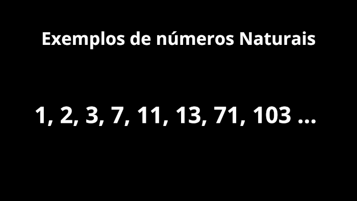
Conjunto dos números Inteiros
Esse conjunto representa todos os números inteiros, ou seja, que não contém parte decimal. Nesse conjunto os números podem ser tanto positivos quanto negativos, e claro, o zero.
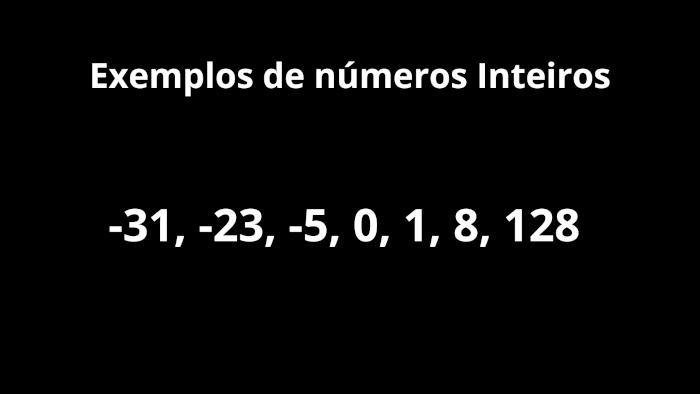
Conjunto dos racionais
O conjunto dos racionais constitui-se de todos os números que podem ser representados como fração, tendo o denominador diferente de zero.
Podemos usar a seguinte representação: Q = {x | x = a/b com a e b ∈ Z e b ≠ 0.}
Tradução: Um número pertence ao conjunto Q se esse número pode ser representado com uma fração de a sobre b, com a e b pertencentes a Z e b diferente de zero.
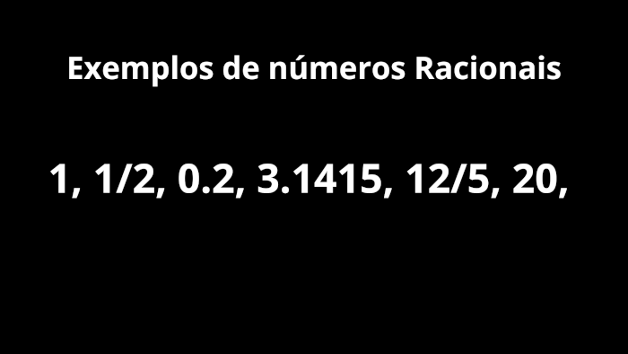
Com os racionais, como dito acima, podemos transforma-los em fração. Para transformar frações em decimais realizamos a divisão do numerador (número de cima da fração) pelo denominador (número de baixo da fração). Para transfomar decimais (finitos) em frações multiplicamos tanto o numerador quanto o denominador por uma potência de 10, elevado a quantidade de casas após a virgula, ou ponto em alguns casos, do número.
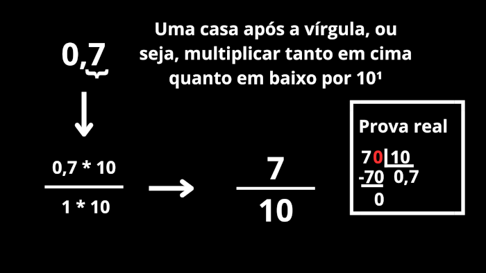
Dizimas periódicas
As dizimas periódicas são números decimais infinitos, porém, possuiem um padrão chamado de "período". Por exemplo o número 0,555555555..., vemos que ele vai até o infinito, porém há um período, o 5. Para transformar números assim em frações devemos: achar o período, contar quantas casas ele tem (não todas, pois o número é infinito! Mas, sim as casas do período antes que elas comecem a repetir), e colocar essa quantidade de casas como noves no deniminador, veja o exemplo:
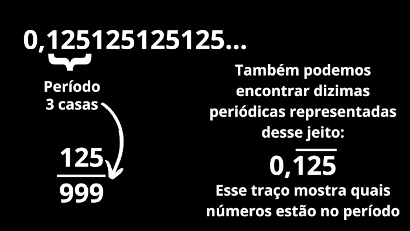
Dizimas compostas: São dizimas tal quais as anteriores, porém com algum número que NÃO pertencem ao período. Para transforma-las em frações devemos: retirar a parte que não pertence ao período por meio da transformação de decimal para frações e fazer o processo das dizimas periódicas com o período. Veja o exemplo:
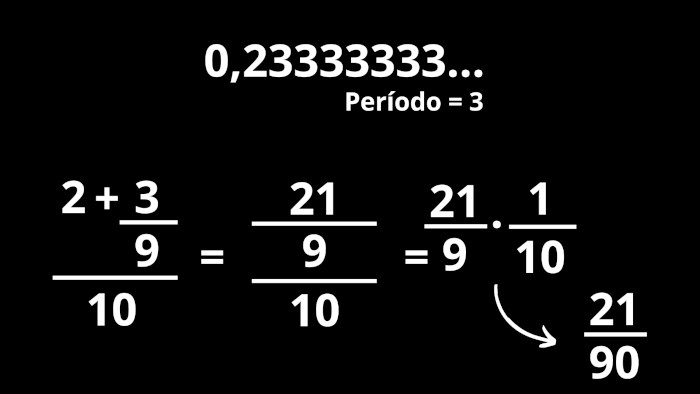
Números Mistos
Números mistos são inteiros e frações juntos. A representação deles é uma número grande que representa a parte inteira seguido de uma fração que representa a parte decimal. Junto dos mistos temos as frações impróprias que representam o número misto sem a parte inteira. veja o exemplo:
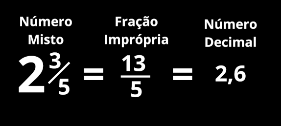
Transformação de número misto para fração imprópria: multiplicar a parte inteira pelo denominador e somar com o numerador.
Transformação de fração imprópria para número misto: fazer a divisão e colocar o quociente como parte inteira e o resto como numerador.
Conjunto dos Irracionais
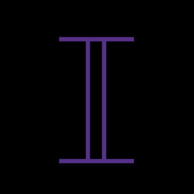
Os irracionais são números infinitos sem padrão (período). Geralmente os números irracionais são representados por uma letra grega, como o PI, o FI (número de ouro) e também a raiz quadrada de 2.
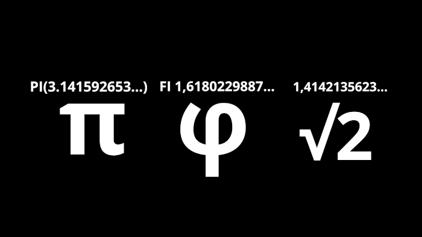
Conjunto dos Reais
O conjunto de números reais é a união de todos os conjuntos anteriores. Também podemos dizer que ℝ = ℚ ∪ I (O conjunto real é igual a junção do racional com o irracional, já que os naturais e inteiros estão nos racionais).
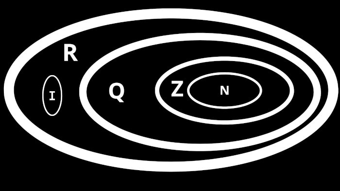
No diagrama acima podemos ver mais visualmente o que foi dito no texto acima.
Conjunto dos Complexos
O conjunto dos complexos serve para que posssamos calcular contas com números imaginários, por exemplo, uma raiz quadrada de um número negativo. Sabemos que é impossivel uma potênciação resultar em um número negativo, por isso, usamos a letra i junto com a conta para calcular o valor. Os complexos são os conjuntos de equações que não podem ser resolvidas com os reais.
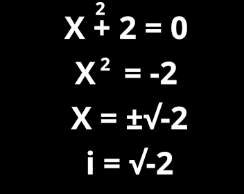